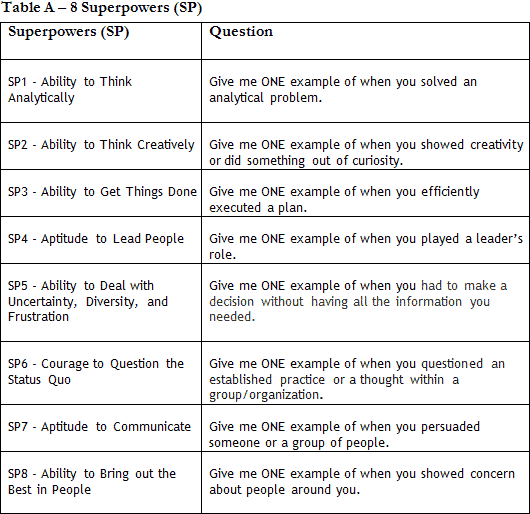

DISCLAIMER: Km 31 (Stanford)/ Km 32 (HBS) / Km 33 (Wharton) / Km 34 (MIT Sloan) / Km 35 (CBS) guidance in assembling your first/second/third/fourth/fifth/sixth/seventh essay packages.
The following dialogue helps you put together your sixth package, Chicago Booth.
Even if you’re not applying to Stanford/HBS/Wharton/Sloan/CBS carefully, the comments made on how to assemble these three initial essay packages. Those dialogues will allow you to better enjoy the following one.
Before we discuss their essays, we should recall that in order to build your Chicago Booth package, you must have done the Big Synthesis Exercise and reflected upon the feedback of your 3 Wise Men.
01. How will the Booth MBA help you achieve your immediate and long-term post-MBA career goals? (250 word minimum)
02. Chicago Booth immerses you in a choice-rich environment. How have your interests, leadership experiences, and other passions influenced the choices in your life? (250 word minimum)
Length: There is no maximum length, only a 250 word minimum. We trust that you will use your best judgment in determining how long your submission should be, but we recommend that you think strategically about how to best allocate the space.
Before that, what do you think about talking a little about the interviews for Booth?
Oh, come on, Megaron, I will cross that bridge when I come to it. I will worry about my interviews only in November and only if I am invited.
No, sir, no way. We will talk about that soon, but for now, observe the feedback provided by one student, a Chicago Booth candidate, last year.
“He began by saying that the whole interview would be in English. Here comes the question pool:
1. Walk me through your resume.
2. What are your short and long-term goals?
3. Why does an MBA make sense at this moment of your life and why did you become interested in Chicago?
4. Key moment of your professional life.
5. Describe your most significant accomplishment.
6. Describe a time when you faced a challenge.
7. Tell me about a time you failed.
8. Describe a typical weekend.
9. Describe the perfect/ideal weekend.
10. What kind of people do you enjoy working with?
11. What book are you reading? What's your favorite book?”
2. What are your short and long-term goals?
3. Why does an MBA make sense at this moment of your life and why did you become interested in Chicago?
4. Key moment of your professional life.
5. Describe your most significant accomplishment.
6. Describe a time when you faced a challenge.
7. Tell me about a time you failed.
8. Describe a typical weekend.
9. Describe the perfect/ideal weekend.
10. What kind of people do you enjoy working with?
11. What book are you reading? What's your favorite book?”
Wow, that is a lot to answer. Oh, my, you do have to have a well-defined SYNTHESIS in your head.
I noticed that I have already answered some of the questions from your student’s interview. I did that when I wrote the weekly essays, right?
Yes, you have. When NOVEMBER comes and we start practicing for the interviews, you will feel prepared. Check the questions already answered – Table A below:

Ok, agreed, it would be nice to have an idea of what is coming ahead in the interviews.
Yes, and once again, understand that your candidacy is much more than essays.
I understand that what I will answer in the interview must be aligned with what I write in my essays.
We will discuss that when we talk about interviews. By the way, have you finished reading the Km about Why School research, Km 26?
I am on it, Megaron.
Nicholas, please keep in mind that you need to define, as early as possible, your main argument on why pursue the MBA. If you can explain Why MBA, it is easy to sell Why Chicago Booth (Km 27).
That is true. Megaron, I saw on the internet that many consultants analyze the essay questions of several b-schools. What’s your opinion on that?
The analyses on essay topics will give you an insight into HOW to answer a specific question, BUT they cannot help you answer the WHY, the inquiring element that brings SYNTHESIS to your sale. In other words, do not waste too much time analyzing the questions if you do not know what you’re selling. Having said that, I think many admissions consultants offer good analyses of essay topics. I recommend:1. Accepted
2. Clear Admit
3. Veritas Prep
2. Clear Admit
3. Veritas Prep